|
HDF5
1.15.0.ce99ebc
API Reference
|

|
|
HDF5
1.15.0.ce99ebc
API Reference
|
|
HDF5 dataspaces describe the shape of datasets in memory or in HDF5 files. Dataspaces can be empty (H5S_NULL), a singleton (H5S_SCALAR), or a multi-dimensional, regular grid (H5S_SIMPLE). Dataspaces can be re-shaped.
Subsets of dataspaces can be "book-marked" or used to restrict I/O operations using selections. Furthermore, certain set operations are supported for selections.
The HDF5 dataspace is a required component of an HDF5 dataset or attribute definition. The dataspace defines the size and shape of the dataset or attribute raw data. In other words, a dataspace defines the number of dimensions and the size of each dimension of the multidimensional array in which the raw data is represented. The dataspace must be defined when the dataset or attribute is created.
The dataspace is also used during dataset I/O operations, defining the elements of the dataset that participate in the I/O operation.
This chapter explains the dataspace object and its use in dataset and attribute creation and data transfer. It also describes selection operations on a dataspace used to implement sub‐setting, sub‐sampling, and scatter‐gather access to datasets.
This section introduces the notion of the HDF5 dataspace object and a programming model for creating and working with dataspaces.
An HDF5 dataspace is a required component of an HDF5 dataset or attribute. A dataspace defines the size and the shape of a dataset's or an attribute's raw data. Currently, HDF5 supports the following types of the dataspaces:
A scalar dataspace, H5S_SCALAR, represents just one element, a scalar. Note that the datatype of this one element may be very complex; example would be a compound structure with members being of any allowed HDF5 datatype, including multidimensional arrays, strings, and nested compound structures. By convention, the rank of a scalar dataspace is always 0 (zero); think of it geometrically as a single, dimensionless point, though that point may be complex.
A simple dataspace, H5S_SIMPLE , is a multidimensional array of elements. The dimensionality of the dataspace (or the rank of the array) is fixed and is defined at creation time. The size of each dimension can grow during the life time of the dataspace from the current size up to the maximum size. Both the current size and the maximum size are specified at creation time. The sizes of dimensions at any particular time in the life of a dataspace are called the current dimensions, or the dataspace extent. They can be queried along with the maximum sizes.
A null dataspace, H5S_NULL, contains no data elements. Note that no selections can be applied to a null dataset as there is nothing to select.
As shown in the UML diagram in the figure below, an HDF5 simple dataspace object has three attributes: the rank or number of dimensions; the current sizes, expressed as an array of length rank with each element of the array denoting the current size of the corresponding dimension; and the maximum sizes, expressed as an array of length rank with each element of the array denoting the maximum size of the corresponding dimension.
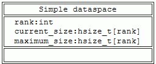
A simple dataspace |
Note: A simple dataspace is defined by its rank, the current size of each dimension, and the maximum size of each dimension.
The size of a current dimension cannot be greater than the maximum size, which can be unlimited, specified as H5S_UNLIMITED. Note that while the HDF5 file format and library impose no maximum size on an unlimited dimension, practically speaking its size will always be limited to the biggest integer available on the particular system being used.
Dataspace rank is restricted to 32, the standard limit in C on the rank of an array, in the current implementation of the HDF5 Library. The HDF5 file format, on the other hand, allows any rank up to the maximum integer value on the system, so the library restriction can be raised in the future if higher dimensionality is required.
Note that most of the time Fortran applications calling HDF5 will work with dataspaces of rank less than or equal to seven, since seven is the maximum number of dimensions in a Fortran array. But dataspace rank is not limited to seven for Fortran applications.
The current dimensions of a dataspace, also referred to as the dataspace extent, define the bounding box for dataset elements that can participate in I/O operations.
The programming model for creating and working with HDF5 dataspaces can be summarized as follows:
The rest of this section will address steps 1, 2, and 5 of the programming model; steps 3 and 4 will be discussed in later sections of this chapter.
A dataspace can be created by calling the H5Screate function. Since the definition of a simple dataspace requires the specification of dimensionality (or rank) and initial and maximum dimension sizes, the HDF5 Library provides a convenience API, H5Screate_simple to create a simple dataspace in one step.
The following examples illustrate the usage of these APIs.
Creating a Scalar Dataspace
As mentioned above, the dataspace will contain only one element. Scalar dataspaces are used more often for describing attributes that have just one value. For example, the attribute temperature with the value Celsius is used to indicate that the dataset with this attribute stores temperature values using the Celsius scale.
A null dataspace is created with the H5Screate function.
As mentioned above, the dataspace will contain no elements.
Let's assume that an application wants to store a two‐dimensional array of data, A(20,100). During the life of the application, the first dimension of the array can grow up to 30; there is no restriction on the size of the second dimension. The following steps are used to declare a dataspace for the dataset in which the array data will be stored.
Alternatively, the convenience APIs H5Screate_simple/h5screate_simple_f can replace the H5Screate/h5screate_f and H5Sset_extent_simple/h5sset_extent_simple_f calls.
In this example, a dataspace with current dimensions of 20 by 100 is created. The first dimension can be extended only up to 30. The second dimension, however, is declared unlimited; it can be extended up to the largest available integer value on the system.
Note that when there is a difference between the current dimensions and the maximum dimensions of an array, then chunking storage must be used. In other words, if the number of dimensions may change over the life of the dataset, then chunking must be used. If the array dimensions are fixed (if the number of current dimensions is equal to the maximum number of dimensions when the dataset is created), then contiguous storage can be used. For more information, see "Data Transfer".
Maximum dimensions can be the same as current dimensions. In such a case, the sizes of dimensions cannot be changed during the life of the dataspace object. In C, NULL can be used to indicate to the H5Screate_simple and H5Sset_extent_simple functions that the maximum sizes of all dimensions are the same as the current sizes.
The created dataspace will have current and maximum dimensions of 20 and 100 correspondingly, and the sizes of those dimensions cannot be changed.
Dataspace dimensions are numbered from 1 to rank. HDF5 uses C storage conventions, assuming that the last listed dimension is the fastest‐changing dimension and the first‐listed dimension is the slowest changing. The HDF5 file format storage layout specification adheres to the C convention and the HDF5 Library adheres to the same convention when storing dataspace dimensions in the file. This affects how C programs and tools interpret data written from Fortran programs and vice versa. The example below illustrates the issue.
When a Fortran application describes a dataspace to store an array as A(20,100), it specifies the value of the first dimension to be 20 and the second to be 100. Since Fortran stores data by columns, the first‐listed dimension with the value 20 is the fastest‐changing dimension and the last‐listed dimension with the value 100 is the slowest‐changing. In order to adhere to the HDF5 storage convention, the HDF5 Fortran wrapper transposes dimensions, so the first dimension becomes the last. The dataspace dimensions stored in the file will be 100,20 instead of 20,100 in order to correctly describe the Fortran data that is stored in 100 columns, each containing 20 elements.
When a Fortran application reads the data back, the HDF5 Fortran wrapper transposes the dimensions once more, returning the first dimension to be 20 and the second to be 100, describing correctly the sizes of the array that should be used to read data in the Fortran array A(20,100).
When a C application reads data back, the dimensions will come out as 100 and 20, correctly describing the size of the array to read data into, since the data was written as 100 records of 20 elements each. Therefore C tools such as h5dump and h5ls always display transposed dimensions and values for the data written by a Fortran application.
Consider the following simple example of equivalent C 3 x 5 and Fortran 5 x 3 arrays. As illustrated in the figure below, a C application will store a 3 x 5 2‐dimensional array as three 5‐element rows. In order to store the same data in the same order, a Fortran application must view the array as a 5 x 3 array with three 5‐element columns. The dataspace of this dataset, as written from Fortran, will therefore be described as 5 x 3 in the application but stored and described in the file according to the C convention as a 3 x 5 array. This ensures that C and Fortran applications will always read the data in the order in which it was written. The HDF5 Fortran interface handles this transposition automatically.
| A dataset stored by a C program in a 3 x 5 array: |

|
| The same dataset stored by a Fortran program in a 5 x 3 array: |
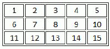
|
| The first dataset above as written to an HDF5 file from C or the second dataset above as written from Fortran: |
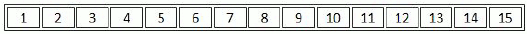
|
| The first dataset above as written to an HDF5 file from Fortran: |
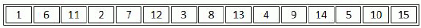
|
Note: The HDF5 Library stores arrays along the fastest‐changing dimension. This approach is often referred to as being “in C order.” C, C++, and Java work with arrays in row‐major order. In other words, the row, or the last dimension, is the fastest‐changing dimension. Fortran, on the other hand, handles arrays in column‐major order making the column, or the first dimension, the fastest‐changing dimension. Therefore, the C and Fortran arrays illustrated in the top portion of this figure are stored identically in an HDF5 file. This ensures that data written by any language can be meaningfully read, interpreted, and manipulated by any other.
The HDF5 Library provides several APIs designed to query the characteristics of a dataspace.
The function H5Sis_simple returns information about the type of a dataspace. This function is rarely used and currently supports only simple and scalar dataspaces.
To find out the dimensionality, or rank, of a dataspace, use H5Sget_simple_extent_ndims. H5Sget_simple_extent_dims can also be used to find out the rank. See the example below. If both functions return 0 for the value of rank, then the dataspace is scalar.
To query the sizes of the current and maximum dimensions, use H5Sget_simple_extent_dims.
The following example illustrates querying the rank and dimensions of a dataspace using these functions.
Read and write operations transfer data between an HDF5 file on disk and in memory. The shape that the array data takes in the file and in memory may be the same, but HDF5 also allows users the ability to represent data in memory in a different shape than in the file. If the shape of an array in the file and in memory will be the same, then the same dataspace definition can be used for both. If the shape of an array in memory needs to be different than the shape in the file, then the dataspace definition for the shape of the array in memory can be changed. During a read operation, the array will be read into the different shape in memory, and during a write operation, the array will be written to the file in the shape specified by the dataspace in the file. The only qualification is that the number of elements read or written must be the same in both the source and the destination dataspaces.
Item a in the figure below shows a simple example of a read operation in which the data is stored as a 3 by 4 array in the file (item b) on disk, but the program wants it to be a 4 by 3 array in memory. This is accomplished by setting the memory dataspace to describe the desired memory layout, as in item c. The read operation reads the data in the file array into the memory array.
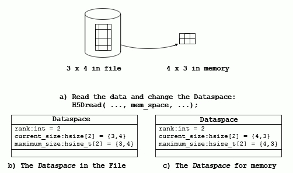
Data layout before and after a read operation |
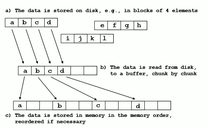
Moving data from disk to memory |
Both the source and destination are stored as contiguous blocks of storage with the elements in the order specified by the dataspace. The figure above shows one way the elements might be organized. In item a, the elements are stored as 3 blocks of 4 elements. The destination is an array of 12 elements in memory (see item c). As the figure suggests, the transfer reads the disk blocks into a memory buffer (see item b), and then writes the elements to the correct locations in memory. A similar process occurs in reverse when data is written to disk.
In addition to rearranging data, the transfer may select the data elements from the source and destination.
Data selection is implemented by creating a dataspace object that describes the selected elements (within the hyper rectangle) rather than the whole array. Two dataspace objects with selections can be used in data transfers to read selected elements from the source and write selected elements to the destination. When data is transferred using the dataspace object, only the selected elements will be transferred.
This can be used to implement partial I/O, including:
To use selections, the following steps are followed:
A selection is created by applying one or more selections to a dataspace. A selection may override any other selections (H5S_SELECT_SET) or may be “Ored” with previous selections on the same dataspace (H5S_SELECT_OR). In the latter case, the resulting selection is the union of the selection and all previously selected selections. Arbitrary sets of points from a dataspace can be selected by specifying an appropriate set of selections.
Two selections are used in data transfer, so the source and destination must be compatible, as described below.
There are two forms of selection, hyperslab and point. A selection must be either a point selection or a set of hyperslab selections. Selections cannot be mixed.
The definition of a selection within a dataspace, not the data in the selection, cannot be saved to the file unless the selection definition is saved as a region reference. For more information, see References to Dataset Regions.
A hyperslab is a selection of elements from a hyper rectangle. An HDF5 hyperslab is a rectangular pattern defined by four arrays. The four arrays are summarized in the table below.
The offset defines the origin of the hyperslab in the original dataspace.
The stride is the number of elements to increment between selected elements. A stride of ‘1’ is every element, a stride of ‘2’ is every second element, etc. Note that there may be a different stride for each dimen‐sion of the dataspace. The default stride is 1.
The count is the number of elements in the hyperslab selection. When the stride is 1, the selection is a hyper rectangle with a corner at the offset and size count[0] by count[1] by.... When stride is greater than one, the hyperslab bounded by the offset and the corners defined by stride[n] * count[n].
| Parameter | Description |
|---|---|
| Offset | The starting location for the hyperslab. |
| Stride | The number of elements to separate each element or block to be selected. |
| Count | The number of elements or blocks to select along each dimension. |
| Block | The size of the block selected from the dataspace. |
The block is a count on the number of repetitions of the hyperslab. The default block size is '1', which is one hyperslab. A block of 2 would be two hyperslabs in that dimension, with the second starting at offset[n] + (count[n] * stride[n]) + 1.
A hyperslab can be used to access a sub‐set of a large dataset. The figure below shows an example of a hyperslab that reads a rectangle from the middle of a larger two dimensional array. The destination is the same shape as the source.
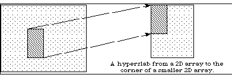
Access a sub‐set of data with a hyperslab |
Hyperslabs can be combined to select complex regions of the source and destination. The figure below shows an example of a transfer from one non‐rectangular region into another non‐rectangular region. The source is defined as the union of two hyperslabs, and the destination is the union of three hyperslabs.
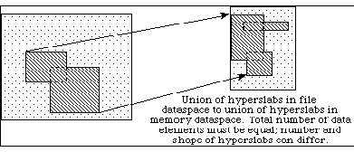
Build complex regions with hyperslab unions |
Hyperslabs may also be used to collect or scatter data from regular patterns. The figure below shows an example where the source is a repeating pattern of blocks, and the destination is a single, one dimensional array.
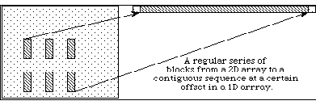
Use hyperslabs to combine or disperse data |
The second type of selection is an array of points such as coordinates. Essentially, this selection is a list of all the points to include. The figure below shows an example of a transfer of seven elements from a two dimensional dataspace to a three dimensional dataspace using a point selection to specify the points.
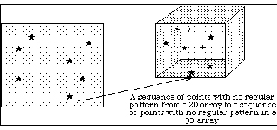
Point selection |
A selection must have the same number of dimensions (rank) as the dataspace it is applied to, although it may select from only a small region such as a plane from a 3D dataspace. Selections do not affect the extent of the dataspace, the selection may be larger than the dataspace. The boundaries of selections are reconciled with the extent at the time of the data transfer.
A data transfer (read or write) with selections is the same as any read or write, except the source and destination dataspace have compatible selections.
During the data transfer, the following steps are executed by the library:
Selections have an iteration order for the points selected, which can be any permutation of the dimensions involved (defaulting to 'C' array order) or a specific order for the selected points, for selections composed of single array elements with H5Sselect_elements.
The elements of the selections are transferred in row‐major, or C order. That is, it is assumed that the first dimension varies slowest, the second next slowest, and so forth. For hyperslab selections, the order can be any permutation of the dimensions involved (defaulting to ‘C’ array order). When multiple hyperslabs are combined, the hyperslabs are coalesced into contiguous reads and writes.
In the case of point selections, the points are read and written in the order specified.
Suppose we want to read a 3x4 hyperslab from a dataset in a file beginning at the element <1,2> in the dataset, and read it into a 7 x 7 x 3 array in memory. See the figure below. In order to do this, we must create a dataspace that describes the overall rank and dimensions of the dataset in the file as well as the position and size of the hyperslab that we are extracting from that dataset.
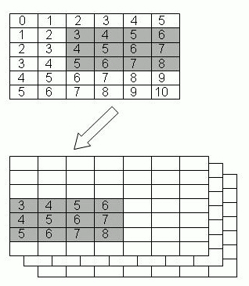
Selecting a hyperslab |
The code in the first example below illustrates the selection of the hyperslab in the file dataspace. The second example below shows the definition of the destination dataspace in memory. Since the in‐memory dataspace has three dimensions, the hyperslab is an array with three dimensions with the last dimension being 1: <3,4,1>. The third example below shows the read using the source and destination dataspaces with selections.
Selecting a hyperslab
Defining the destination memory
A sample read specifying source and destination dataspaces
Consider an 8 x 12 dataspace into which we want to write eight 3 x 2 blocks in a two dimensional array from a source dataspace in memory that is a 50‐element one dimensional array. See the figure below.
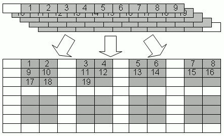
Write from a one dimensional array to a two dimensional array |
The example below shows code to write 48 elements from the one dimensional array to the file dataset starting with the second element in vector. The destination hyperslab has the following parameters: offset=(0,1), stride=(4,3), count=(2,4), block=(3,2). The source has the parameters: offset=(1), stride=(1), count=(48), block=(1). After these operations, the file dataspace will have the values shown in item b in the figure above. Notice that the values are inserted in the file dataset in row‐major order.
Write from a one dimensional array to a two dimensional array
The HDF5 Library allows the user to select a union of hyperslabs and write or read the selection into another selection. The shapes of the two selections may differ, but the number of elements must be equal.
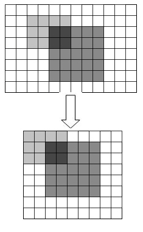
Transferring hyperslab unions |
The figure above shows the transfer of a selection that is two overlapping hyperslabs from the dataset into a union of hyperslabs in the memory dataset. Note that the destination dataset has a different shape from the source dataset. Similarly, the selection in the memory dataset could have a different shape than the selected union of hyperslabs in the original file. For simplicity, the selection is that same shape at the destination.
To implement this transfer, it is necessary to:
The example below shows example code to create the selections for the source dataspace (the file). The first hyperslab is size 3 x 4 and the left upper corner at the position (1,2). The hyperslab is a simple rectangle, so the stride and block are 1. The second hyperslab is 6 x 5 at the position (2,4). The second selection is a union with the first hyperslab (H5S_SELECT_OR).
Select source hyperslabs
The example below shows example code to create the selection for the destination in memory. The steps are similar. In this example, the hyperslabs are the same shape, but located in different positions in the dataspace. The first hyperslab is 3 x 4 and starts at (0,0), and the second is 6 x 5 and starts at (1,2). Finally, the H5Dread call transfers the selected data from the file dataspace to the selection in memory. In this example, the source and destination selections are two overlapping rectangles. In general, any number of rectangles can be OR’ed, and they do not have to be contiguous. The order of the selections does not matter, but the first should use H5S_SELECT_SET ; subsequent selections are unioned using H5S_SELECT_OR.
It is important to emphasize that the source and destination do not have to be the same shape (or number of rectangles). As long as the two selections have the same number of elements, the data can be transferred.
Select destination hyperslabs
It is also possible to specify a list of elements to read or write using the function H5Sselect_elements.
The procedure is similar to hyperslab selections.
The figure below shows an example where four values are to be written to four separate points in a two dimensional dataspace. The source dataspace is a one dimensional array with the values 53, 59, 61, 67. The destination dataspace is an 8 x 12 array. The elements are to be written to the points (0,0), (3,3), (3,5), and (5,6). In this example, the source does not require a selection. The example below the figure shows example code to implement this transfer.
A point selection lists the exact points to be transferred and the order they will be transferred. The source and destination are required to have the same number of elements. A point selection can be used with a hyperslab (for example, the source could be a point selection and the destination a hyperslab, or vice versa), so long as the number of elements selected are the same.
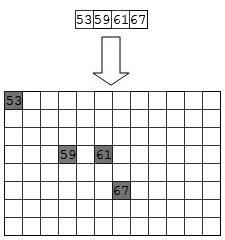
Write data to separate points |
Write data to separate points
Selections are a very flexible mechanism for reorganizing data during a data transfer. With different combinations of dataspaces and selections, it is possible to implement many kinds of data transfers including sub‐setting, sampling, and reorganizing the data. The table below gives some example combinations of source and destination, and the operations they implement.
|
Source |
Destination |
Operation |
|---|---|---|
|
All |
All |
Copy whole array |
|
All |
All (different shape) |
Copy and reorganize array |
|
Hyperslab |
All |
Sub-set |
|
Hyperslab |
Hyperslab (same shape) |
Selection |
|
Hyperslab |
Hyperslab (different shape) |
Select and rearrange |
|
Hyperslab with stride or block |
All or hyperslab with stride 1 |
Sub-sample, scatter |
|
Hyperslab |
Points |
Scatter |
|
Points |
Hyperslab or all |
Gather |
|
Points |
Points (same) |
Selection |
|
Points |
Points (different) |
Reorder points |
This section is under construction.
Another use of selections is to store a reference to a region of a dataset. An HDF5 object reference object is a pointer to an object (dataset, group, or committed datatype) in the file. A selection can be used to create a pointer to a set of selected elements of a dataset, called a region reference. The selection can be either a point selection or a hyperslab selection.
A region reference is an object maintained by the HDF5 Library. The region reference can be stored in a dataset or attribute, and then read. The dataset or attribute is defined to have the special datatype, H5T_STD_REF_DSETREG.
To discover the elements and/or read the data, the region reference can be dereferenced. The H5Rdereference call returns an identifier for the dataset, and then the selected dataspace can be retrieved with a call to H5Rget_region(). The selected dataspace can be used to read the selected data elements.
For more information,
Region references are used to implement stored pointers to data within a dataset. For example, features in a large dataset might be indexed by a table. See the figure below. This table could be stored as an HDF5 dataset with a compound datatype, for example, with a field for the name of the feature and a region reference to point to the feature in the dataset. See the second figure below.
Features indexed by a table |
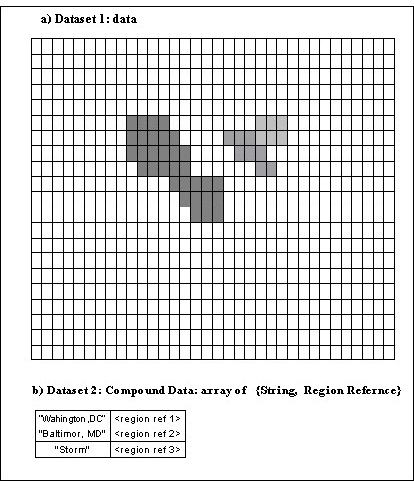
Storing the table with a compound datatype |
To create a region reference:
The figure below shows a diagram of a file with three datasets. Dataset D1 and D2 are two dimensional arrays of integers. Dataset R1 is a one dimensional array of references to regions in D1 and D2. The regions can be any valid selection of the dataspace of the target dataset.
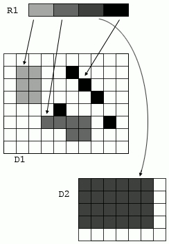
A file with three datasets |
Note: In the figure above, R1 is a 1 D array of region pointers; each pointer refers to a selection in one dataset.
The example below shows code to create the array of region references. The references are created in an array of type hdset_reg_ref_t. Each region is defined as a selection on the dataspace of the dataset, and a reference is created using H5Rcreate(). The call to H5Rcreate() specifies the file, dataset, and the dataspace with selection.
Create an array of region references
When all the references are created, the array of references is written to the dataset R1. The dataset is declared to have datatype H5T_STD_REF_DSETREG. See the example below.
Write the array of references to a dataset
When creating region references, the following rules are enforced.
To retrieve data from a region reference, the reference must be read from the file, and then the data can be retrieved. The steps are:
The example below shows code to read an array of region references from a dataset, and then read the data from the first selected region. Note that the region reference has information that records the dataset (within the file) and the selection on the dataspace of the dataset. After dereferencing the regions reference, the datatype, number of points, and some aspects of the selection can be discovered. (For a union of hyperslabs, it may not be possible to determine the exact set of hyperslabs that has been combined.) The table below the code example shows the inquiry functions.
When reading data from a region reference, the following rules are enforced:
Read an array of region references; read from the first selection
|
Function |
Information |
|---|---|
| H5Sget_select_npoints |
The number of elements in the selection (hyperslab or point selection). |
| H5Sget_select_bounds |
The bounding box that encloses the selected points (hyperslab or point selection). |
| H5Sget_select_hyper_nblocks |
The number of blocks in the selection. |
| H5Sget_select_hyper_blocklist |
A list of the blocks in the selection. |
| H5Sget_select_elem_npoints |
The number of points in the selection. |
| H5Sget_select_elem_pointlist |
The points. |
This section contains the full programs from which several of the code examples in this chapter were derived. The h5dump output from the program's output file immediately follows each program.
h5_write.c
h5_write.f90
h5_write_tr.f90
Previous Chapter HDF5 Datatypes - Next Chapter HDF5 Attributes
 1.9.7
1.9.7